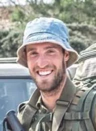

כפר עזה
ברגשטיין שחף ז"ל
לוחם מילואים, חובש, איש אדמה וטיולים
סיפור חיים
שחף ברגשטיין ז״ל, בנם של שלומית ודב, נולד בכ״ב בתמוז תש״ן, 15 ביולי 1990, בקיבוץ עלומים שבנגב המערבי. הוא היה אח ליעקב, טל ולבונה.
שחף גדל והתחנך בקיבוץ עלומים. הוא היה בן מסור להוריו, אח אוהב לשלושת אחיו, וקיבוצניק בכל רמ״ח איבריו. מנעוריו עבד בחקלאות, ענף מרכזי בקיבוצו, ואהב את אדמת הנגב, את השדות, את הטבע ואת הים.
בילדותו אהב לשחק במשחקי כדור עם אחיו וחבריו, ובמשך שנים השתתף בחוג כדורסל. ספורט היה חלק בלתי נפרד מחייו: כדורסל, כדורגל, מטקות בים, יוגה, תרגילי כוח, שחייה ובעיקר ריצה. הוא רץ בשעות הבוקר המוקדמות, לפני שיצא לעבוד בשדות, ודִרבן גם את חבריו לרוץ, להתמיד ולשמור על כושר.
בחודשי הקיץ נהג להגיע לחוף זיקים, תמיד מצויד במטקות. הוא אהב את הים, את החופש, את התנועה ואת המרחבים.
לאחר לימודיו התיכוניים למד שחף במכינה הקדם־צבאית ״ארזי הלבנון״ במעלה אפרים, שם שילב לימודים, טיולים והעמקה באהבת הארץ. בספר המחזור של המכינה כתב את המשפט שליווה את חייו: ״לא משנה כמה שנים יש בחיים, חשוב כמה חיים יש בשנים.״
באוגוסט 2009 התגייס לצה״ל ושירת כלוחם בסיירת עורב נח״ל. הוא עבר קורס חובשים ושימש חובש קרבי בצוות, ובהמשך חובש פלוגתי בסיירת. במהלך שירותו בלט כאמיץ, יוזם, אחראי ובעל מוטיבציה גבוהה. חבריו זכרו את קולו העוצמתי, את נוכחותו, את ההומור ואת היכולת לשמור על מורל גבוה גם ברגעים מאתגרים.
לאחר שחרורו מצה״ל נסע לטייל בדרום אמריקה. כששב לארץ למד הנדסת טכנולוגיות מים במכללה האקדמית ספיר. כהנדסאי מים פיקח על עבודות השקיה וגידולי שדה בקיבוץ עלומים. הוא נהנה מהעבודה הפיזית בחיק הטבע, וראה בה מימוש של הערכים שהובילו אותו: ציונות, התיישבות בנגב, עבודה עברית וחקלאות.
שחף אהב את ארץ ישראל בכל ליבו. הוא הכיר שבילים, מסלולים, כבישים, מעיינות, צמחים ונופים, וגילה בקיאות יוצאת דופן בידיעת הארץ. מגיל צעיר טייל ברחבי הארץ, ובכל שיחה אפשר היה למצוא איתו נושא משותף - היסטוריה, גיאוגרפיה, טבע, מסלול, דרך או סיפור מקומי.
הוא אהב מוזיקה ישראלית, ובמיוחד את ברי סחרוף, אהוד בנאי ולהקת ״בית הבובות״. לצד השירים בעברית אהב גם את להקת U2.
שחף היה דוד אהוב במיוחד. אחייניו זכו בו כדוד מושלם, שיצא איתם להרפתקאות ולטיולים, הסביר להם על מקומות ואתרים, ענה בסבלנות על שאלותיהם והכניס לחייהם ידע, סקרנות ושמחה.
הוא היה חבר מסור, תומך ומחבר בין אנשים. חבריו תיארו אותו כ״החבר שכל אחד היה רוצה שיהיה לו״. אדם בעל לב רחב, שתמיד היה הראשון לעזור - עוד לפני שביקשו ממנו. הוא הקפיץ חברים לרכבת, לקח ילדים של חברים לחוגים, ובעזרת הטנדר שלו עזר לשנע חפצים ולעבור דירה, תמיד בשמחה ובנפש חפצה.
שחף מצא דרך לחבר בין אהבתו לריצה לבין אהבתו לעזרה לזולת, והתנדב בקבוצת הריצה של עמותת ״אתגרים״ בבאר שבע, שם שימש רץ מלווה לאנשים כבדי ראייה.
מאז סיום שירותו הסדיר שירת במילואים כלוחם בגדס״ר 6408 של חטיבת עציוני. הוא היה חבר צוות מסור במיוחד - מהראשונים להגיע לכל פעילות ומהאחרונים לעזוב. בשירות המילואים האחרון שלו קיבל תעודת הוקרה כ״מצטיין קו״.
בסוף שנות העשרים לחייו עבר להתגורר בקיבוץ כפר עזה, אך המשיך לעבוד בחקלאות בקיבוץ עלומים. בכפר עזה הצטרף כשחקן לקבוצת הכדורסל ״הפועל כפר עזה״, והמשיך לשלב בין אהבת הספורט, הקהילה והחברות.
שבעה באוקטובר והימים שאחריו ביום שישי, ערב שמחת תורה תשפ״ד, נסע שחף לקיבוץ עלומים כדי לחגוג את החג עם משפחתו. הוא השתתף בתפילה ובהקפות בבית הכנסת, רקד עם אחייניו האהובים, ולאחר מכן הגיע לסעודת החג המשפחתית בבית הוריו. בהמשך נפגש עם חברים, ובשעת לילה מאוחרת שב לביתו בכפר עזה.
בבוקר שבת, שמחת תורה תשפ״ד, 7 באוקטובר 2023, חדרו מחבלים לקיבוץ כפר עזה במסגרת מתקפת הטרור הרצחנית על יישובי עוטף עזה.
עם מטח הרקטות הראשון הודיע שחף לחבריו שהוא נכנס למרחב המוגן בביתו. זמן קצר לאחר מכן חדרו מחבלים לקיבוץ. שחף נורה למוות בביתו. לידו נמצא התנ״ך שלו.
במשך ימים הוגדר שחף כנעדר, עד שנמסרה למשפחתו הבשורה הקשה.
רב־סמל ראשון במילואים שחף ברגשטיין נפל בכפר עזה בכ״ב בתשרי תשפ״ד, 7 באוקטובר 2023. בן 33 היה בנופלו. הוא הובא למנוחות בבית העלמין הצבאי בקריית שאול.
לאחר נפילתו הועלה לדרגת רב־סמל מתקדם במילואים.
זיכרון ומילים מהלב יעקב, אחיו של שחף, ספד לו: ״שחף שלנו, הדמעות יורדות, ואתה חסר בכל מקום, בכל אירוע, בכל נשימה. אתה לא פה, והחיים שלנו השתנו לעולם. אנחנו מבטיחים לך שלאט לאט נקום ונחייך ואפילו נשמח, אבל החוסר שלך לעולם ימשיך ללוות אותנו.״
לבונה, אחותו, ספדה לו: ״תודה שהיית לי לאח גדול 29 שנים, תודה שעזרת תמיד ועשית הכול בשבילי, תודה שזכיתי לאכול איתך כמעט כל יום ארוחת צהריים בחדר האוכל.״
טל, אחיו, סיפר על הטיול המשותף שלהם בנפאל ועל הזכות לחוות עם שחף אינספור חוויות, לטייל בהרי ההימלאיה, להיות אחיו ולחיות לצידו.
שלומית, אימו, הקריאה מעל קברו: ״בפאזל המשפחתי חסרים החלקים שלך, המיוחדים רק לך. לפאזל נוספו חלקים חדשים ומאירים, אבל שלך לעולם לא יושלמו.״
בני שכבתו בקיבוץ ספדו לו: ״שפי שלנו, לא נתפס שאתה לא איתנו יותר. תמיד תהיה חלק מאיתנו, פיסה מהילדות שלנו. אוהבים ומתגעגעים.״
חבריו מעורב נח״ל כתבו: ״לימדת אותנו להיות טובים לאחרים גם כשקשה, לעזור גם כשאתה עצמך צריך עזרה, להתעלות על הכאב ולהראות עוצמות כדי לחזק גם את הסביבה. היית חבר יקר ואיש מיוחד שלא כל יום רואים. נזכור אותך תמיד.״
שחף מונצח בדרכים רבות. הוא מונצח באתר עמותת ידידי סיירת עורב נח״ל ובפרויקט הנצחה של עמותת סיירת נח״ל. בחיל הרפואה הוא מונצח כחובש צבאי.
משפחתו ואוהביו החליטו להקים מצפה לזכרו בשדות קיבוץ עלומים. בפרויקט ״מקום בשולחן״ פורסם מתכון ללזניה, המנה האהובה עליו, והוא הונצח גם במהדורה מיוחדת של שוקולד ״פרה״ עבור המשפחה.
אחיו יעקב וטל החליטו לרוץ לזכרו במרתון ניו יורק במסגרת נבחרת הריצה של עמותת ״שלוה״, המסייעת לאנשים עם מוגבלויות ולבני משפחותיהם.
משפחתו הדפיסה על מדבקות את המשפט שכתב במכינה: ״לא משנה כמה שנים יש בחיים, חשוב כמה חיים יש בשנים״. עבורם, המשפט הזה הוא צוואה - להמשיך להכניס כמה שיותר חיים, אור, טוב וחסד גם בתוך החלל הגדול שהותיר.
שחף נזכר כאיש נדיר של אדמה, מים, טיולים, ספורט, חסד וחברות. לוחם, חובש, אח, בן, דוד וחבר אהוב; אדם שידע כל שביל בארץ, ראה כל אדם סביבו, ותמיד חיפש איפה אפשר לעזור.